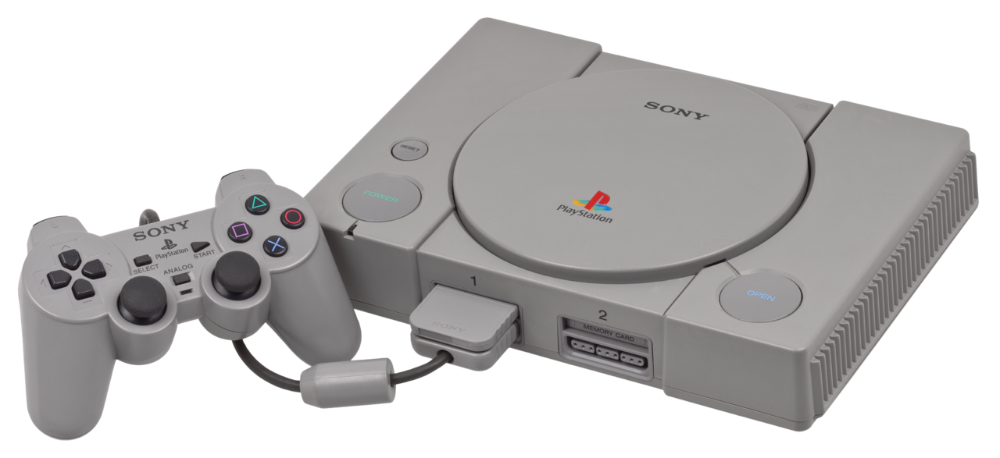
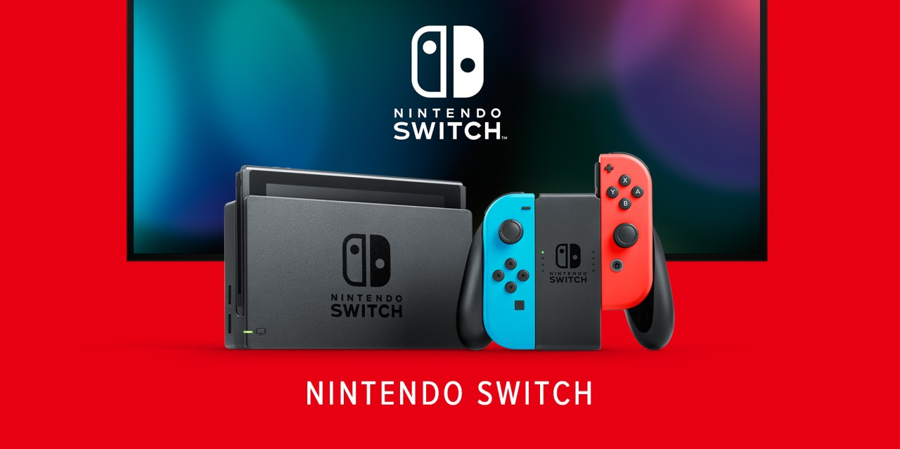

Nintendo Entertainment System (NES)

Lanzada en 1983, salvó la industria tras la crisis del videojuego y popularizó sagas como Mario y Zelda.
A lo largo de la historia de los videojuegos, varias consolas han dejado una huella imborrable. Desde las primeras máquinas de los años 70 hasta los sistemas modernos, cada una ha aportado innovaciones que cambiaron la industria.
Lanzada en 1983, salvó la industria tras la crisis del videojuego y popularizó sagas como Mario y Zelda.

En 1994 revolucionó el mercado con gráficos 3D y juegos como Final Fantasy VII y Metal Gear Solid.

La consola que llevó a Sonic a la fama y protagonizó la gran rivalidad con Nintendo en los 90.

Híbrida entre portátil y sobremesa, se convirtió en un éxito mundial desde su lanzamiento en 2017.